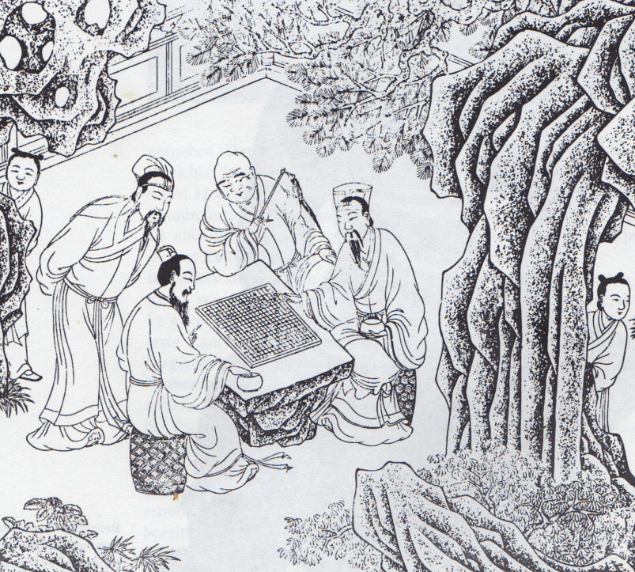
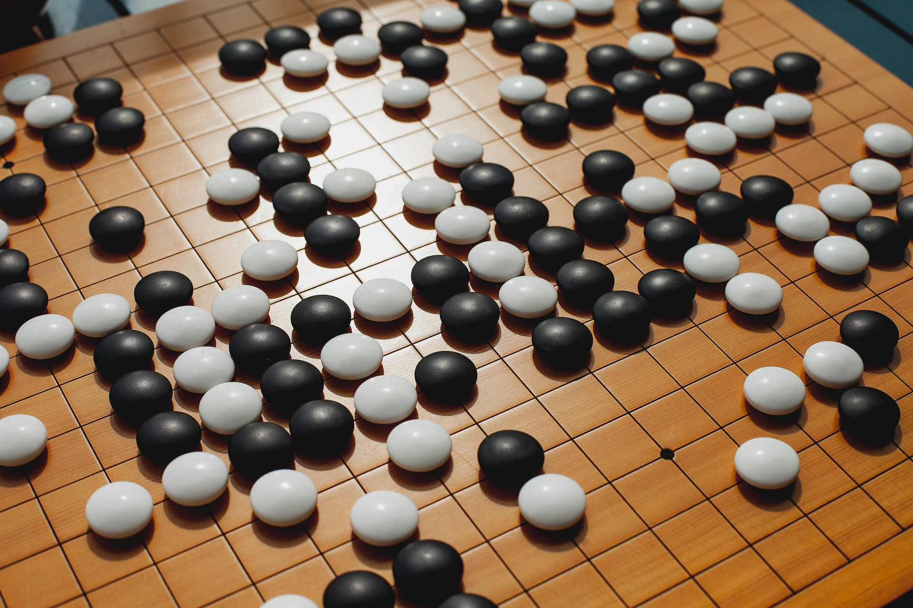
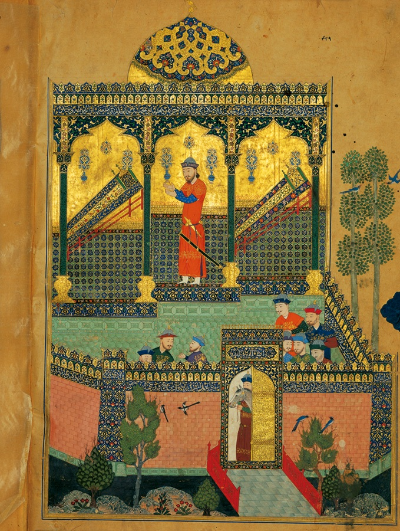

The Fabled East
Hermann Hesse’s Glass Bead Game (3)
If you like reading about philosophy, here's a free, weekly newsletter with articles just like this one: Send it to me!
This is the third part of a series on Hesse’s Glass Bead Game. Find the previous parts right here:

Hermann Hesse’s ‘The Glass Bead Game’ may be his greatest novel. It combines a theory of history and education with Zen, and meditations on friendship and duty.
In the first part of this series, we talked about the “age of the feuilleton,” which is essentially our own age: an age of distractions, where knowledge has been degraded into “infotainment,” gossip and listicles. It is amazing that Hesse could so accurately foresee these developments when he wrote his book in the 1940s.

At the centre of Hermann Hesse’s Glass Bead Game is a grand vision of life in Castalia, a province of scholars.
In the second part, we discussed the scholarly province “Castalia,” Hesse’s version of a learned utopia, in which monk-like scholars enjoy the freedom of lifelong research, no questions asked. Of course, the author does ask the question whether this would be a good world or not, and there are all sorts of issues that the books touches upon: do scholars have a responsibility to lead the non-scholarly world? Can this even work? Does the world have a duty to support a learned province like Castalia, and why exactly? Are scholars like those in Castalia better or worse people than those outside? And many more. The book is surprisingly open on the answers – Hesse recognises the problems of his utopia, and, in the end, Josef Knecht leaves Castalia and his high-ranking master’s job to become the private tutor of a boy “outside.”
Today we want to take a closer look at the role of “Eastern” and Chinese motifs in the book and in Hesse’s work in general, because Chinese culture forms in many ways the basis upon which the idea of the Glass Bead Game is built.
Chinese culture and the Go game
The Glass Bead Game is not so much a “game” in the sense of an entertainment for idle hours or an educational play for children. It is rather a formal system controlled by strict rules in the way that abstract syntax, mathematics, formal logic, music theory and theoretical physics might be described as “games.” Or, and this might have been one of Hesse’s inspirations, the game of Go, recently made better known by AlphaGo, the AI program that won against the world’s top players.
Go has always had an aura of mystique surrounding it, in the way that Western chess does not. Chess can be difficult, and few are able to play it really well, but nobody thinks that the game is somehow a mirror of the player’s soul, or that it expresses deep truths about life, death, strategy, greed, planning and success, or the laws of the universe – as is often assumed that Go does.
Part of the allure of Go lies certainly in its close connection with Chinese and Japanese culture. It is telling that the four arts of the traditional Chinese scholar are playing a specific Chinese instrument, the qin, Chinese calligraphy, Chinese painting, and… playing Go.

A Ming dynasty painting of Go players.
The rules of Go are deceptively simple. The players alternate in placing black and white stones on the intersections of a 19x19 board. When a stone or a group of connected stones is surrounded, so that it has no free places anywhere around it, it dies and is taken off the board. At some point, the players agree that the game is over and count how much area their stones have surrounded. The player who has surrounded the biggest territory and captured more of the enemy’s stones wins. I left out some minor details, but this is the general idea of the game.

Photo by Elena Popova on Unsplash
The game has many interesting properties. First, the board is very big. While chess is played on an 8x8 board with 64 places for the pieces, Go pieces can be placed on any one of the 361 intersections of a 19x19 board. As opposed to the pre-defined starting position in chess, Go stones can initially be placed anywhere on an empty board, giving the players a huge number of possible moves. Since the Go stones don’t move, they are all equal, and no further rules restrict their movements (in the way that chess rules do). This gives Go players enormous freedom in creating a particular game. Of course, there are some recurring patterns that are known to be good, and other placements of stones that are believed to be bad; but one of the surprises of AlphaGo’s games has been the realisation that some moves traditionally thought inferior are actually not bad, while traditionally “good” play can lead to a player losing the game. So even after centuries of intensive, highest-level play, the Go community is still discovering new ways of approaching their game and is still learning how to play it better.
The Elder Brother
Hesse had a great admiration for traditional Chinese culture. In the Glass Bead Game itself, the protagonist, Joseph Knecht, spends a few weeks with a master of the Chinese arts, interestingly a non-Chinese:
[Knecht] used later to tell his intimates with special affection about the “Bamboo Grove,” the lovely hermitage which was the scene of his I Ching studies. There he learned and experienced things of crucial importance. There, too, guided by a wonderful premonition or Providence, he found unique surroundings and an extraordinary person: the founder and inmate of the Chinese hermitage, who was called Elder Brother. We think it proper to describe at greater length this most remarkable episode in his years of free study.
After looking for a teacher in the interpretation of the I Ching, the Chinese Book of Changes, Knecht is pointed by the administration to the Elder Brother, who lives as a hermit in a far-away part of Castalia’s forests.
It had become apparent to Knecht that his interest in the Book of Changes was leading him into a field which the teachers at the college preferred to keep at a distance, and he therefore grew more cautious in his inquiries. Now, as he made efforts to obtain further information about this legendary Elder Brother, it became obvious to him that the hermit enjoyed a measure of respect, and indeed a degree of fame, but more as an eccentric loner than as a scholar.
At odds with the Castalian administration but a brilliant student of Chinese, the Elder Brother tried to find his own way in the world. Ignoring the Castalian hierarchy, he came to call everyone his “elder brother,” a nickname that ended up being used for him.
One day Elder Brother left the Institute, which would gladly have kept him as a teacher, and set out on a walking tour, armed with brush, Chinese ink saucer, and two or three books. He made his way to the southern part of the country, turning up here and there to visit for a while with brethren of the Order. He looked for and finally found the suitable spot for the hermitage he planned, stubbornly bombarded both the secular authorities and the Order with written and oral petitions until they granted him the right to settle there and cultivate the area. Ever since, he had been living in an idyllic retreat strictly governed by ancient Chinese principles. Some referred to him with amusement as a crank, others venerated him as a kind of saint. But apparently he was content with himself and at peace with the world, devoting his days to meditation and the copying of ancient scrolls whenever he was not occupied with his Bamboo Grove, which sheltered from the north wind a carefully laid out Chinese miniature garden.
Knecht, having practised his Chinese manners, meets the hermit and is able to address him in a satisfactory manner. The older man agrees to have tea with the visitor, and later offers Knecht a bed for the night. That is all he is willing to agree to.
Until suppertime they sat under the swaying bamboos exchanging courtesies, verses from odes, and sayings from the classical writers. They looked at the flowers and took pleasure in the fading pinks of sunset along the mountain ranges. Then they re-entered the house. Elder Brother served bread and fruit, cooked an excellent pancake for each of them on a tiny stove, and after they had eaten he asked in German the purpose of his visit, and in German Knecht explained why he had come and what he desired, which was to stay as long as Elder Brother permitted him, and to become his disciple.
“We shall discuss that tomorrow,” the hermit said, and showed his guest to a bed.
The next day, they have tea again and sit still in the garden, admiring the flowers, the sky and the goldfish in Elder Brother’s little fish pond. Elder Brother asks Knecht if he’d be willing to be “quiet as a goldfish” if he was allowed to stay? Yes, says Knecht. Elder Brother consults the oracle of the I Ching, and it turns out in Knecht’s favour.
While Knecht sat and looked on with an awe equal to his curiosity, keeping “as still as a goldfish,” Elder Brother fetched from a wooden beaker, which was rather a kind of quiver, a handful of sticks. These were the yarrow stalks. He counted them out carefully, returned one part of the bundle to the vessel, laid a stalk aside, divided the rest into two equal bundles, kept one in his left hand, and with the sensitive fingertips of his right hand took tiny little clusters from the pack in his left. He counted these and laid them aside until only a few stalks remained. These he held between two fingers of his left hand. …
This goes on for quite a while, and at the end Elder Brother reads out what the oracle has decided:
“Youthful folly wins success. I do not seek the young fool, The young fool seeks me. At the first oracle I give knowledge. If he asks again, it is importunity. If he importunes, I give no knowledge. Perseverance is beneficial."
So Knecht is permitted to stay for a while. Over the next few months, he learns to use the oracle sticks almost as expertly as his teacher.
[Elder Brother] spent an hour a day with him, practicing counting the sticks, imparting the grammar and symbolism of the oracular language, and drilling him in writing and memorizing the sixty-four signs. He read to Knecht from ancient commentaries, and every so often, on particularly good days, told him a story by Chuang Tzu. For the rest, the disciple learned to tend the garden, wash the brushes, and prepare the Chinese ink. He also learned to make soup and tea, gather brushwood, observe the weather, and handle the Chinese calendar. But his rare attempts to introduce the Glass Bead Game and music into their sparing conversations yielded no results whatsoever; they seemed to fall upon deaf ears, or else were turned aside with a forbearing smile or a proverb such as, “Dense clouds, no rain,” or, “Nobility is without flaw.”
Hesse’s China
This episode might be seen as a little romanticising excursion of the ageing author into a faux-Chinese, kitsch backdrop. But Hesse has been flirting with oriental mystique repeatedly throughout his career and in many of his works. In Siddhartha, which we also discussed here, he describes the Buddhist awakening of an Indian wisdom-seeker. In his Journey to the East, he has a group of travellers, members of the secret society “The League,” a kind of proto-Castalia, venture east in search of the ultimate truth.
Interestingly, the German word Hesse uses as a title is “Morgenlandfahrt,” literally: the morning-land-journey. It’s not a journey “east,” to a plain direction of the compass. It is a journey into the morning, into the lands of awakening. “Morgenland” in German is first found in the Bible translation of Luther, where it is a translation of ancient Greek “anatole,” the place where the sun comes up, the origin of light, the source of en-lightenment. Luther uses it to denote the place where the three magi, the three oriental kings who bring presents to baby Jesus, come from. Since then, the word has been used in German lore to evoke romantic images in the cliche-style of the Arabian Nights. The Morgenland: that is the fabled lands of Marco Polo’s journey, the kingdom of Prester John, the forbidden places of powerful Muslim rulers, beautiful princesses, secret gardens, flying carpets and bottled-up genies.

Baysonghor Shahnameh, 1430
But Hesse is not primarily interested in the middle East. He looks beyond that, to India, and to the even more exotic and incomprehensible lands of the Chinese. In Hesse’s time, India had been firmly British for more than four centuries, while China, although it harboured small islands of Western culture, primarily in Shanghai and other big, coastal cities, was still a vast, unexplored continent full of mysteries. The ancient tradition of Chinese calligraphy, the still-alive teachings of Confucius and the other great sages, the simple beauty of its thousand-year old poetry, the power and splendour of its historical palaces, its legends of empires crumbling to dust because of the beauty of one woman – all this could not but endlessly fascinate the reclusive romantic poet in wartime Switzerland, with armies advancing all around the tiny country’s borders, bringing death and destruction to the last remnants of what once had been the “land of the poets and thinkers,” old, pre-20th century Germany.
Afterward Joseph Knecht described the months he lived in the Bamboo Grove as an unusually happy time. He also frequently referred to it as the “beginning of my awakening” — and in fact from that period on the image of “awakening” turns up more and more often in his remarks, with a meaning similar to although not quite the same as that he had formerly attributed to the image of vocation. It could be assumed that the “awakening” signified knowledge of himself and of the place he occupied within the Castalian and the general human order of things; but it seems to us that the accent increasingly shifts toward self-knowledge in the sense that from the “beginning of his awakening” Knecht came closer and closer to a sense of his special, unique position and destiny, while at the same time, the concepts and categories of the traditional hierarchy of the world and of the special Castalian hierarchy became for him more and more relative matters.
Here we see a shift in Knecht, and in the way Hesse presents his utopia. The contact with the Elder Brother and the strong influence that Chinese culture had on him, begins to alienate Knecht from the hierarchy of his province. Although now firmly on the way to becoming one of the leading members of Castalian hierarchy, Knecht is beginning to question how well he actually fits into this world. It is a process that had begun when he was arguing against Plinio as a young man, but that needed the support of the whole “other” culture of the Chinese in order to lead to his “awakening.”
Chinese writing and calligraphy
Finally, an important inspiration for Hesse’s Glass Bead Game, which we will talk about next time, is the Chinese writing system. In a way, one could argue that only the Chinese have developed an actual writing system that is independent of the vocalisation of speech. In English and other European languages, we don’t actually “write” meaning. We write down sounds. If we want to read what we have written, we have to read the letters, convert them back into sounds and listen to what we are saying when we read the words aloud. In time, we learn to do this internally, without actually pronouncing the words aloud – but just now, as I type these very words, I am actually first speaking the text, and, a fraction of a second later, my fingers type it onto the computer keyboard. Writing is, for us, just a way of capturing speech.
There is one exception to that, and it can give us a pretty good idea of what Chinese looks like to its native speakers: numbers and mathematical signage. When I write 12+3, I am, for once, not writing down sounds. I am actually writing down meaning. An English speaker can read “12+3” as “twelve-plus-three,” a German would read it as “zwoelf-und-drei” and a modern Greek as “dodeka-syn-tria”. But all of them would write down exactly the same symbols to represent these very different speech patterns – because they are not actually writing down speech at all. Mathematics has become a universal language precisely because it can convey identical meaning to speakers of any human language, because its meaning is not tied to a particular language.
Chinese does essentially the same, but with every word. Instead of writing “man,” and reading m-a-n, before forming the idea of a human in the mind, the Chinese speaker writes “人” without necessarily pronouncing the word in any particular way. Depending on where the speaker comes from, the word “人” might be spoken “ren,” “yan,” “nyin,” “liin,” “reng,” “neng,” or even “nhan” (Vietnamese) and “hito” (Japanese). The point is that this character represents a meaning, not a sound.
But the system goes further. We can now take this character, make it a bit slimmer (亻), and tuck it to the side of other characters, adding the meaning of “man” or “human” to them. So we get “什,” a group of ten (十) men (亻) (ancient use, obsolete now); or “仯”, composed of “man” and “few, little, lack”, meaning “child,” and so on.
Hesse clearly had this in mind when devising his Glass Bead Game. In a passage, he describes the language of the game:
[Knecht] was taking part in the annual competition of the Waldzell elite, from which he had abstained in the past two years. The competition involved working out sketches for Games based on three or four prescribed main themes. Stress was placed on new, bold, and original associations of themes, impeccable logic, and beautiful calligraphy. Moreover, this was the sole occasion when competitors were permitted to overstep the bounds of the canon. That is, they could employ new symbols not yet admitted to the official code and vocabulary of hieroglyphs. This made the competition — which in any case was the most exciting annual event in Waldzell except for the great public ceremonial games — a contest among the most promising advocates of new Game symbols, and the very highest distinction for a winner in this competition consisted in the recognition of his proposed additions to the grammar and vocabulary of the Game and their acceptance into the Game Archives and the Game language.
Clearly here, the “Game language” is a language written in “hieroglyphs,” in “symbols” and utilising “calligraphy,” rather than some kind of dry, utilitarian notation. The language is strictly regulated and new symbols have to be approved by the officials before they can “enter the canon.”
But we will leave the description of the Game itself to next week’s post. Come back then for the final part of this series, where we will see how the Glass Bead Game itself works!
This is the third part of a series on Hesse’s Glass Bead Game. You can go on reading right here:

Hermann Hesse’s Glass Bead Game is a grand vision of a formal system that describes the hidden harmony of the universe.
Subscribe if you don’t want to miss the future parts in this series:
Your ad-blocker ate the form? Just click here to subscribe!

Andreas Matthias on Daily Philosophy: